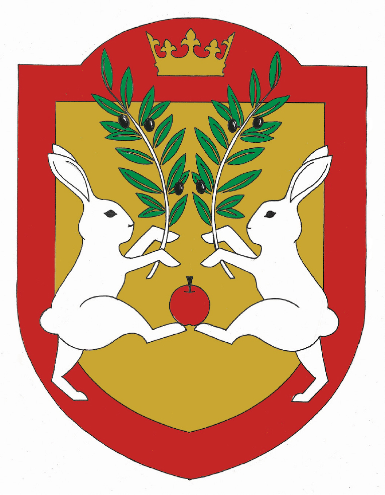

Voici le passage pour découvrir toutes les illustrations que j'ai pu faire au cours de ces dernières années, avec des sujet qui s'entremêlent et se répondent, et petit à petit un style émerge.Découvrir les travaux d'Illustrations
AFFICHE
Voici le passage pour découvrir toutes les affiches que j'ai pu faire au cours de ces dernières années, avec des sujet qui s'entremêlent et se répondent, et petit à petit un style émerge.Découvrir les affiches
Photographies
EN EAU VIOLETTE

Légende
Légende
Légende
Légende
Légende
Légende
Texte descriptif du projet photographique
About me
About Me, Myself And I
Je suis quelqu'un de plutôt simple et de perfectionniste, je suis extrênement exigente envers moi-même, ce qui produit du stress et de la frustration car la perfection n'e'xiste pas et ne peut pas être attteinte. Sinon autre fais j'adore casé des lapins dans mes illustration lorsque je le peut. Lapin est un surnom qui m'a été donné par ma grand mère quand je suis nez car c'est moi c'était une ferme et en naissant je n'était pas plus grande qu'un bébé lapin, en grandissant onn a trouver que le surnom m'allait parfaitement bien vu ma sensibilité émotionnelle et d'autres raison bien trop longue à relater. C'est en sixième à 1o ans que j'ai commencer à dessiner et a apprecier mais je ne le faisais qu'occasionellement, je n'imaginer pas tout les métier lier à l'art et maintenant je fais des etudes là dedans et j'en suis ravie.
Contact
You can find me on
facebook at oliveira amélie
instagram at amelieolvra